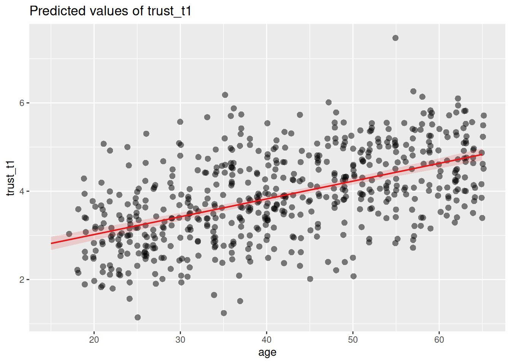

library(tidyverse)
library(sjPlot)
d <- read_csv("https://tinyurl.com/R-practice-data") |>
mutate(age = if_else(age > 100, 2024 - age, age)) |>
select(age, experiment_group, np_subscription, trust_t1, trust_t2)
dSimple linear regression
Predicting one variable from another
What is simple linear regression?
In the tutorial on correlation we learned how to test if there is a relationship between two numeric variables. We saw that the correlation does not have a direction, and that it only tells us if there is a relationship between the variables, and how strong it is. With simple linear regression we can take this one step further, and try to predict the value of one variable based on the value of another variable.
The term predict is used here in a statistical sense, which is slighly different from the everyday use of the word. What we want to know is simply how well we can guess the value of one variable if we know the value of another variable. For example, imagine that you want to be able to predict for a random person on the street how much trust they have in journalists. What information would you use to make this prediction? One thing you might consider is the age of the person. You perform a correlation test, and find that there is indeed a positive correlation between age and news consumption. So you could use this information to make a prediction: the older the person, the more news they consume.
But how will you use this information to make the best possible prediction, and how good will your prediction be? This is something that regression analysis can help you with! We refer to the variable that we want to predict as the dependent variable (e.g. news consumption), and the variables that we use to make the prediction as the independent variables (e.g. age). In simple linear regression we only have one independent variable. Later you will learn how to use more than one independent variable, using multiple regression.
How to use it
For this tutorial we’ll be using our standard practice data. Regression is a flexible tool, allowing the indepent variable to either be numeric (like in a correlation), binary (like in a t-test), or categorical (like in an ANOVA). So we’ll prepare a bunch of columns to show your an example for each of these cases.
Regression analysis is built into R, but we’ll also be using the tidyverse package to load and clean the data, and the sjPlot package to show the results in a nice table.
Regression with numerical independent variable
Let’s start with the example of predicting trust in journalists based on age. For this we’ll be using the trust_t11 variable as the dependent variable, and the age variable as the independent variable. We’ll use the lm() function to run the regression, and the tab_model() function from the sjPlot package to show the results in a nice table. Inside the lm() function we specify the formula for the regression, which has the format dependent ~ independent (just like in the t-test and ANOVA).
m <- lm(trust_t1 ~ age, data = d)
tab_model(m)| trust_t1 | |||
| Predictors | Estimates | CI | p |
| (Intercept) | 2.21 | 1.99 – 2.43 | <0.001 |
| age | 0.04 | 0.04 – 0.05 | <0.001 |
| Observations | 595 | ||
| R2 / R2 adjusted | 0.292 / 0.291 | ||
The output of the regression analysis gives us values for two predictors: the (intercept) and the age variable. This is the information that we need to make a prediction.
To help you understand what this means, it helps to visualize the regression line. For this we can use the plot_model() function.2
plot_model(m, type = "pred", show.data = T, jitter=T)
The (intercept) tells us what the average value of the dependent variable (trust_t1) is when the independent variable (age) is zero. The estimate for the age predictor tells us how much the dependent variable (trust_t1) changes for every unit increase in the independent variable (age).
The estimate for the age predictor tells us how much the dependent variable (trust_t1) changes for every unit increase in the independent variable (age). The coefficient that is reported under estimate is 0.04, which means that for every year older a person is, their trust in journalists increases by 0.04 points.
Together, the intercept and slope create a regression line that best fits the data. You can think of this line as the prediction.
plot_model(m, type = "pred", show.data = T, jitter=T) 
For every value of age, it tells us what the average value of trust_t1 is. So around the age of 20, the average trust is around 3, whereas for 50 year olds its around 4.2.
By best fits we mean that the line minimizes the distance between the predicted values (the line) and the actual values.
To get a better feel for the intercept and slope, we can plot the regression line on a scatterplot of the data.
Footnotes
We use the
trust_t1variable here, because for the current analysis we are not interested in the effect of the experimental group. Sincetrust_t1is measured before the experiment, it is not influenced by the experiment.↩︎The
plot_model()function is part of thesjPlotpackage, and is a very useful tool for visualizing regression models. When use usetype = "pred"it visualizes theprediction. Here we also sayshow.data = Tto show the actual data points. Thejitter = Targument randomly moves the data points around a tiny bit, so that if two observations have exactly the same values, they will not overlap.↩︎